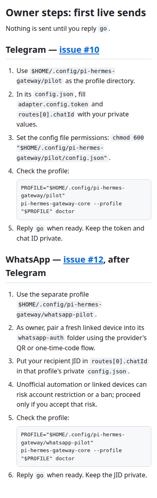

pi-hermes-gateway · story #27 · docs-only
Owner steps: first live sends

Screenshot shows the rendered section, including both numbered owner checklists, issue links, one-line doctor commands, account-risk note, and the no-send-until-go boundary.